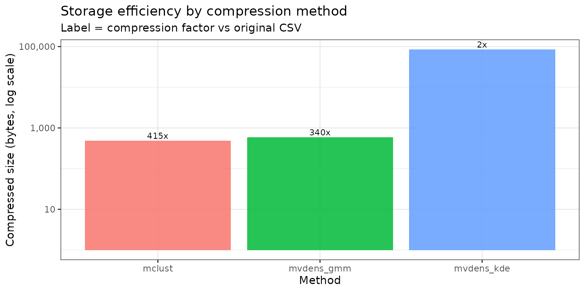
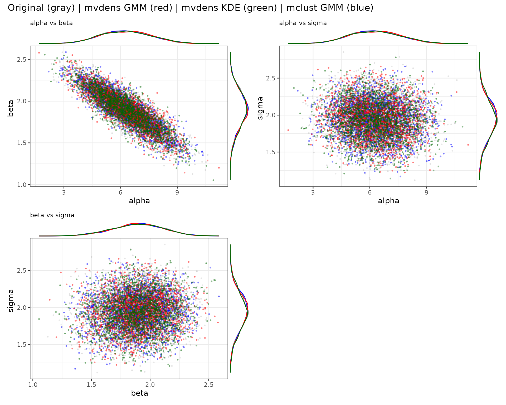
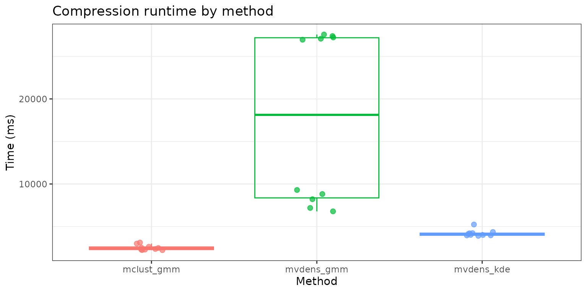

poco exposes a single method argument to
switch between density approximations. This vignette compares the
available backends on a small synthetic posterior so you can pick the
right trade-off for your problem.
compression_methods()
#> [1] "mclust" "mvdens_gmm" "mvdens_kde"method |
Backend | Notes |
|---|---|---|
"mclust" |
mclust::Mclust() |
parametric GMM, BIC-based selection, fast & compact |
"mvdens_gmm" |
mvdens::fit.gmm() |
EM-based GMM, requires the suggested mvdens
package |
"mvdens_kde" |
mvdens::fit.kde() |
kernel density estimate, larger but non-parametric |
set.seed(1)
n_per <- 2000
draws <- rbind(
mvtnorm::rmvnorm(
n_per,
mean = c(5.5, 2.0, 2.0),
sigma = matrix(c(
1.0, -0.14, 0.00,
-0.14, 0.03, 0.00,
0.00, 0.00, 0.05
), 3, 3, byrow = TRUE)
),
mvtnorm::rmvnorm(
n_per,
mean = c(7.0, 1.8, 1.9),
sigma = matrix(c(
1.2, -0.18, 0.00,
-0.18, 0.04, 0.00,
0.00, 0.00, 0.06
), 3, 3, byrow = TRUE)
)
)
colnames(draws) <- c("alpha", "beta", "sigma")mvdens_* methods require the suggested
mvdens package; we skip them gracefully when it is not
installed.
methods_to_try <- c("mclust")
if (requireNamespace("mvdens", quietly = TRUE)) {
methods_to_try <- c(methods_to_try, "mvdens_gmm", "mvdens_kde")
}
fits <- lapply(methods_to_try, function(m) {
compress_posterior(draws, method = m, n_components = 2)
})
#> ℹ mclust: trying all 14 covariance models c(EII, VII, EEI, VEI, EVI, VVI, EEE, VEE, EVE, VVE, EEV, VEV, EVV, VVV) and picking the best by BIC (n = 4000, d = 3).
#> ℹ mclust: selected model 'EEE' with G = 2 (BIC = -7,020.8) out of 14 candidate models: EII, VII, EEI, VEI, EVI, VVI, EEE, VEE, EVE, VVE, EEV, VEV, EVV, VVV.
#> Warning in .fit.gmm.internal(x, K, truncated = F, bounds = NA, min_cov = NULL,
#> : Solution not converged in1000, returning optimal found solution
names(fits) <- methods_to_tryCompare compressed file sizes against the original posterior draws. Expected pattern: GMM-based methods are usually much smaller than KDE because they store only mixture parameters rather than all data points.
has_ggplot <- requireNamespace("ggplot2", quietly = TRUE)
tmp_dir <- tempfile("storage-benchmark-")
dir.create(tmp_dir, recursive = TRUE, showWarnings = FALSE)
csv_files <- file.path(tmp_dir, "posterior_draws.csv")
utils::write.csv(draws, csv_files, row.names = FALSE)
rds_paths <- file.path(tmp_dir, paste0("posterior_", names(fits), ".rds"))
for (i in seq_along(fits)) {
saveRDS(fits[[i]], rds_paths[[i]], compress = "xz")
}
original_size <- as.numeric(file.size(csv_files))
compressed_sizes <- file.size(rds_paths)
compression_x <- original_size / compressed_sizes
pct_of_original <- 100 * compressed_sizes / original_size
for (i in seq_along(compressed_sizes)) {
cat(
sprintf(
"%-12s %10s bytes (%.2f%% of original, %.0fx compression)\n",
paste0(names(fits)[[i]], ":"),
format(compressed_sizes[[i]], big.mark = ","),
pct_of_original[[i]],
compression_x[[i]]
)
)
}
#> mclust: 488 bytes (0.24% of original, 415x compression)
#> mvdens_gmm: 596 bytes (0.29% of original, 340x compression)
#> mvdens_kde: 84,660 bytes (41.76% of original, 2x compression)
storage_df <- data.frame(
method = names(fits),
bytes = as.numeric(compressed_sizes),
pct_of_original = as.numeric(pct_of_original),
compression_x = as.numeric(compression_x)
)
storage_df <- storage_df[order(storage_df$bytes), ]
print(storage_df)
#> method bytes pct_of_original compression_x
#> 1 mclust 488 0.2407356 415.393443
#> 2 mvdens_gmm 596 0.2940132 340.120805
#> 3 mvdens_kde 84660 41.7636844 2.394425
if (has_ggplot) {
ggplot2::ggplot(
storage_df,
ggplot2::aes(x = reorder(method, bytes), y = bytes, fill = method)
) +
ggplot2::geom_col(alpha = 0.85) +
ggplot2::geom_text(
ggplot2::aes(label = sprintf("%.0fx", compression_x)),
vjust = -0.3,
size = 3
) +
ggplot2::scale_y_log10(labels = scales::label_number(big.mark = ",")) +
ggplot2::labs(
title = "Storage efficiency by compression method",
subtitle = "Label = compression factor vs original CSV",
x = "Method",
y = "Compressed size (bytes, log scale)"
) +
ggplot2::theme_bw() +
ggplot2::theme(legend.position = "none")
} else {
message("Install suggested package 'ggplot2' to render the storage efficiency plot.")
}
All methods support [sample_posterior()] with the same interface:
regen <- lapply(fits, sample_posterior, n_draws = 2000)
sapply(regen, function(s) {
c(mean_alpha = mean(s[, "alpha"]),
mean_beta = mean(s[, "beta"]),
mean_sigma = mean(s[, "sigma"]),
cor_alpha_beta = cor(s[, "alpha"], s[, "beta"]))
})
#> mclust mvdens_gmm mvdens_kde
#> mean_alpha 6.2821786 6.2789029 6.2872840
#> mean_beta 1.8942849 1.8938995 1.8896709
#> mean_sigma 1.9418046 1.9412992 1.9322318
#> cor_alpha_beta -0.8738303 -0.8500717 -0.8615243Visual overlap between original draws (gray) and regenerated samples.
if (requireNamespace("ggplot2", quietly = TRUE) &&
requireNamespace("patchwork", quietly = TRUE)) {
draws_df <- as.data.frame(draws)
palette_map <- c(mvdens_gmm = "red", mvdens_kde = "darkgreen", mclust = "blue")
has_ggside <- requireNamespace("ggside", quietly = TRUE)
plot_pairwise <- function(var1, var2) {
p <- ggplot2::ggplot(mapping = ggplot2::aes_string(x = var1, y = var2)) +
ggplot2::geom_point(
data = draws_df,
alpha = 0.15,
size = 0.5,
color = "gray50"
) +
ggplot2::labs(
x = var1,
y = var2,
title = paste(var1, "vs", var2)
) +
ggplot2::theme_bw() +
ggplot2::theme(plot.title = ggplot2::element_text(size = 9))
if (has_ggside) {
p <- p +
ggside::geom_xsidedensity(
data = draws_df,
ggplot2::aes(y = ..density..),
color = "gray50",
alpha = 0.8
) +
ggside::geom_ysidedensity(
data = draws_df,
ggplot2::aes(x = ..density..),
color = "gray50",
alpha = 0.8
) +
ggside::theme_ggside_void()
}
for (method_name in names(regen)) {
regen_df <- as.data.frame(regen[[method_name]])
p <- p + ggplot2::geom_point(
data = regen_df,
alpha = 0.4,
size = 0.5,
color = unname(palette_map[method_name])
)
if (has_ggside) {
p <- p +
ggside::geom_xsidedensity(
data = regen_df,
ggplot2::aes(y = ..density..),
color = unname(palette_map[method_name]),
alpha = 0.8
) +
ggside::geom_ysidedensity(
data = regen_df,
ggplot2::aes(x = ..density..),
color = unname(palette_map[method_name]),
alpha = 0.8
)
}
}
p
}
param_names <- colnames(draws_df)
plot_list <- list()
idx <- 1
for (i in 1:(length(param_names) - 1)) {
for (j in (i + 1):length(param_names)) {
plot_list[[idx]] <- plot_pairwise(param_names[i], param_names[j])
idx <- idx + 1
}
}
ncol_grid <- ceiling(sqrt(length(plot_list)))
combined_plot <- patchwork::wrap_plots(plot_list, ncol = ncol_grid) +
patchwork::plot_annotation(
title = "Original (gray) | mvdens GMM (red) | mvdens KDE (green) | mclust GMM (blue)"
)
combined_plot
} else {
message("Install suggested packages 'ggplot2' and 'patchwork' to render combined_plot.")
}
#> Warning: `aes_string()` was deprecated in ggplot2 3.0.0.
#> ℹ Please use tidy evaluation idioms with `aes()`.
#> ℹ See also `vignette("ggplot2-in-packages")` for more information.
#> This warning is displayed once per session.
#> Call `lifecycle::last_lifecycle_warnings()` to see where this warning was
#> generated.
#> Warning: The dot-dot notation (`..density..`) was deprecated in ggplot2 3.4.0.
#> ℹ Please use `after_stat(density)` instead.
#> This warning is displayed once per session.
#> Call `lifecycle::last_lifecycle_warnings()` to see where this warning was
#> generated.
Benchmark compression on the same synthetic posterior matrix for each backend and visualize runtime.
if (requireNamespace("microbenchmark", quietly = TRUE) &&
requireNamespace("ggplot2", quietly = TRUE)) {
benchmark_draws <- draws
has_mvdens <- requireNamespace("mvdens", quietly = TRUE)
bench_parts <- list(
mclust_gmm = microbenchmark::microbenchmark(
mclust_gmm = compress_posterior(
benchmark_draws,
method = "mclust",
n_components = 2
),
times = 10,
unit = "ms"
)
)
if (has_mvdens) {
bench_parts$mvdens_gmm <- microbenchmark::microbenchmark(
mvdens_gmm = compress_posterior(
benchmark_draws,
method = "mvdens_gmm",
n_components = 2
),
times = 10,
unit = "ms"
)
bench_parts$mvdens_kde <- microbenchmark::microbenchmark(
mvdens_kde = compress_posterior(
benchmark_draws,
method = "mvdens_kde"
),
times = 10,
unit = "ms"
)
}
bench_compression <- do.call(
rbind,
lapply(bench_parts, function(x) {
out <- as.data.frame(x)
out$time_ms <- out$time / 1e6
out
})
)
print(bench_compression[, c("expr", "time_ms")])
ggplot2::ggplot(bench_compression, ggplot2::aes(x = expr, y = time_ms, color = expr)) +
ggplot2::geom_boxplot(outlier.shape = NA, alpha = 0.2) +
ggplot2::geom_jitter(width = 0.12, alpha = 0.7, size = 2) +
ggplot2::labs(
title = "Compression runtime by method",
x = "Method",
y = "Time (ms)"
) +
ggplot2::theme_bw() +
ggplot2::theme(legend.position = "none")
} else {
message("Install suggested packages 'microbenchmark' and 'ggplot2' to run this benchmark.")
}
#> ℹ mclust: trying all 14 covariance models c(EII, VII, EEI, VEI, EVI, VVI, EEE, VEE, EVE, VVE, EEV, VEV, EVV, VVV) and picking the best by BIC (n = 4000, d = 3).
#> ℹ mclust: selected model 'EEE' with G = 2 (BIC = -7,021.44) out of 14 candidate models: EII, VII, EEI, VEI, EVI, VVI, EEE, VEE, EVE, VVE, EEV, VEV, EVV, VVV.
#> ℹ mclust: trying all 14 covariance models c(EII, VII, EEI, VEI, EVI, VVI, EEE, VEE, EVE, VVE, EEV, VEV, EVV, VVV) and picking the best by BIC (n = 4000, d = 3).
#> ℹ mclust: selected model 'EEE' with G = 2 (BIC = -7,025.4) out of 14 candidate models: EII, VII, EEI, VEI, EVI, VVI, EEE, VEE, EVE, VVE, EEV, VEV, EVV, VVV.
#> ℹ mclust: trying all 14 covariance models c(EII, VII, EEI, VEI, EVI, VVI, EEE, VEE, EVE, VVE, EEV, VEV, EVV, VVV) and picking the best by BIC (n = 4000, d = 3).
#> ℹ mclust: selected model 'EEE' with G = 2 (BIC = -7,024.56) out of 14 candidate models: EII, VII, EEI, VEI, EVI, VVI, EEE, VEE, EVE, VVE, EEV, VEV, EVV, VVV.
#> ℹ mclust: trying all 14 covariance models c(EII, VII, EEI, VEI, EVI, VVI, EEE, VEE, EVE, VVE, EEV, VEV, EVV, VVV) and picking the best by BIC (n = 4000, d = 3).
#> ℹ mclust: selected model 'EEE' with G = 2 (BIC = -7,021.4) out of 14 candidate models: EII, VII, EEI, VEI, EVI, VVI, EEE, VEE, EVE, VVE, EEV, VEV, EVV, VVV.
#> ℹ mclust: trying all 14 covariance models c(EII, VII, EEI, VEI, EVI, VVI, EEE, VEE, EVE, VVE, EEV, VEV, EVV, VVV) and picking the best by BIC (n = 4000, d = 3).
#> ℹ mclust: selected model 'EEE' with G = 2 (BIC = -7,024.78) out of 14 candidate models: EII, VII, EEI, VEI, EVI, VVI, EEE, VEE, EVE, VVE, EEV, VEV, EVV, VVV.
#> ℹ mclust: trying all 14 covariance models c(EII, VII, EEI, VEI, EVI, VVI, EEE, VEE, EVE, VVE, EEV, VEV, EVV, VVV) and picking the best by BIC (n = 4000, d = 3).
#> ℹ mclust: selected model 'VEE' with G = 2 (BIC = -7,024.56) out of 14 candidate models: EII, VII, EEI, VEI, EVI, VVI, EEE, VEE, EVE, VVE, EEV, VEV, EVV, VVV.
#> ℹ mclust: trying all 14 covariance models c(EII, VII, EEI, VEI, EVI, VVI, EEE, VEE, EVE, VVE, EEV, VEV, EVV, VVV) and picking the best by BIC (n = 4000, d = 3).
#> ℹ mclust: selected model 'EEE' with G = 2 (BIC = -7,021.48) out of 14 candidate models: EII, VII, EEI, VEI, EVI, VVI, EEE, VEE, EVE, VVE, EEV, VEV, EVV, VVV.
#> ℹ mclust: trying all 14 covariance models c(EII, VII, EEI, VEI, EVI, VVI, EEE, VEE, EVE, VVE, EEV, VEV, EVV, VVV) and picking the best by BIC (n = 4000, d = 3).
#> ℹ mclust: selected model 'EEE' with G = 2 (BIC = -7,023.14) out of 14 candidate models: EII, VII, EEI, VEI, EVI, VVI, EEE, VEE, EVE, VVE, EEV, VEV, EVV, VVV.
#> ℹ mclust: trying all 14 covariance models c(EII, VII, EEI, VEI, EVI, VVI, EEE, VEE, EVE, VVE, EEV, VEV, EVV, VVV) and picking the best by BIC (n = 4000, d = 3).
#> ℹ mclust: selected model 'EEE' with G = 2 (BIC = -7,024.86) out of 14 candidate models: EII, VII, EEI, VEI, EVI, VVI, EEE, VEE, EVE, VVE, EEV, VEV, EVV, VVV.
#> ℹ mclust: trying all 14 covariance models c(EII, VII, EEI, VEI, EVI, VVI, EEE, VEE, EVE, VVE, EEV, VEV, EVV, VVV) and picking the best by BIC (n = 4000, d = 3).
#> ℹ mclust: selected model 'EEE' with G = 2 (BIC = -7,020.93) out of 14 candidate models: EII, VII, EEI, VEI, EVI, VVI, EEE, VEE, EVE, VVE, EEV, VEV, EVV, VVV.
#> Warning in .fit.gmm.internal(x, K, truncated = F, bounds = NA, min_cov = NULL,
#> : Solution not converged in1000, returning optimal found solution
#> Warning in .fit.gmm.internal(x, K, truncated = F, bounds = NA, min_cov = NULL,
#> : Solution not converged in1000, returning optimal found solution
#> Warning in .fit.gmm.internal(x, K, truncated = F, bounds = NA, min_cov = NULL,
#> : Solution not converged in1000, returning optimal found solution
#> Warning in .fit.gmm.internal(x, K, truncated = F, bounds = NA, min_cov = NULL,
#> : Solution not converged in1000, returning optimal found solution
#> Warning in .fit.gmm.internal(x, K, truncated = F, bounds = NA, min_cov = NULL,
#> : Solution not converged in1000, returning optimal found solution
#> expr time_ms
#> mclust_gmm.1 mclust_gmm 2291.539
#> mclust_gmm.2 mclust_gmm 3114.661
#> mclust_gmm.3 mclust_gmm 2359.751
#> mclust_gmm.4 mclust_gmm 2618.914
#> mclust_gmm.5 mclust_gmm 2993.773
#> mclust_gmm.6 mclust_gmm 2287.872
#> mclust_gmm.7 mclust_gmm 2230.859
#> mclust_gmm.8 mclust_gmm 2522.010
#> mclust_gmm.9 mclust_gmm 2473.457
#> mclust_gmm.10 mclust_gmm 2222.200
#> mvdens_gmm.1 mvdens_gmm 8817.745
#> mvdens_gmm.2 mvdens_gmm 8209.484
#> mvdens_gmm.3 mvdens_gmm 9294.985
#> mvdens_gmm.4 mvdens_gmm 7181.189
#> mvdens_gmm.5 mvdens_gmm 27389.210
#> mvdens_gmm.6 mvdens_gmm 27568.766
#> mvdens_gmm.7 mvdens_gmm 26956.049
#> mvdens_gmm.8 mvdens_gmm 6781.217
#> mvdens_gmm.9 mvdens_gmm 27078.216
#> mvdens_gmm.10 mvdens_gmm 27227.385
#> mvdens_kde.1 mvdens_kde 5233.779
#> mvdens_kde.2 mvdens_kde 3962.160
#> mvdens_kde.3 mvdens_kde 4119.624
#> mvdens_kde.4 mvdens_kde 3999.756
#> mvdens_kde.5 mvdens_kde 4227.079
#> mvdens_kde.6 mvdens_kde 3952.325
#> mvdens_kde.7 mvdens_kde 4010.688
#> mvdens_kde.8 mvdens_kde 4204.784
#> mvdens_kde.9 mvdens_kde 4356.801
#> mvdens_kde.10 mvdens_kde 3898.982
"mclust": fastest path; great default for parameter
counts in the hundreds to low thousands."mvdens_gmm": alternative EM-based GMM, useful for
cross-checks."mvdens_kde": non-parametric, larger storage footprint,
useful when the posterior is far from a mixture of Gaussians.
sessionInfo()
#> R version 4.6.0 (2026-04-24)
#> Platform: x86_64-pc-linux-gnu
#> Running under: Ubuntu 24.04.4 LTS
#>
#> Matrix products: default
#> BLAS: /usr/lib/x86_64-linux-gnu/openblas-pthread/libblas.so.3
#> LAPACK: /usr/lib/x86_64-linux-gnu/openblas-pthread/libopenblasp-r0.3.26.so; LAPACK version 3.12.0
#>
#> locale:
#> [1] LC_CTYPE=C.UTF-8 LC_NUMERIC=C LC_TIME=C.UTF-8
#> [4] LC_COLLATE=C.UTF-8 LC_MONETARY=C.UTF-8 LC_MESSAGES=C.UTF-8
#> [7] LC_PAPER=C.UTF-8 LC_NAME=C LC_ADDRESS=C
#> [10] LC_TELEPHONE=C LC_MEASUREMENT=C.UTF-8 LC_IDENTIFICATION=C
#>
#> time zone: UTC
#> tzcode source: system (glibc)
#>
#> attached base packages:
#> [1] stats graphics grDevices utils datasets methods base
#>
#> other attached packages:
#> [1] mvtnorm_1.3-7 poco_0.1.0
#>
#> loaded via a namespace (and not attached):
#> [1] ks_1.15.1 sass_0.4.10 generics_0.1.4
#> [4] KernSmooth_2.23-26 lattice_0.22-9 pracma_2.4.6
#> [7] digest_0.6.39 magrittr_2.0.5 evaluate_1.0.5
#> [10] grid_4.6.0 RColorBrewer_1.1-3 instantiate_0.2.3
#> [13] fastmap_1.2.0 jsonlite_2.0.0 Matrix_1.7-5
#> [16] ggside_0.4.1 processx_3.9.0 mclust_6.1.2
#> [19] ps_1.9.3 scales_1.4.0 microbenchmark_1.5.0
#> [22] textshaping_1.0.5 jquerylib_0.1.4 cli_3.6.6
#> [25] rlang_1.2.0 withr_3.0.2 cachem_1.1.0
#> [28] yaml_2.3.12 otel_0.2.0 tools_4.6.0
#> [31] dplyr_1.2.1 ggplot2_4.0.3 mvdens_1.1.0
#> [34] vctrs_0.7.3 R6_2.6.1 lifecycle_1.0.5
#> [37] fs_2.1.0 htmlwidgets_1.6.4 ragg_1.5.2
#> [40] pkgconfig_2.0.3 desc_1.4.3 callr_3.7.6
#> [43] pkgdown_2.2.0 bslib_0.10.0 pillar_1.11.1
#> [46] gtable_0.3.6 glue_1.8.1 systemfonts_1.3.2
#> [49] xfun_0.57 tibble_3.3.1 tidyselect_1.2.1
#> [52] knitr_1.51 farver_2.1.2 patchwork_1.3.2
#> [55] htmltools_0.5.9 labeling_0.4.3 rmarkdown_2.31
#> [58] compiler_4.6.0 S7_0.2.2